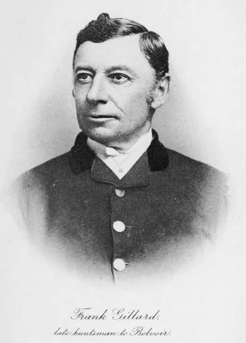

Chapter VI. The Huntsman
Description
This section is from the book "Hunting: A Manual of Fox, Hare, Stag & Otter Hunting", by J. Otho Paget. Also available from Amazon: Hunting: A Manual of Fox, Hare, Stag & Otter Hunting.
Chapter VI. The Huntsman
Some men are natural huntsmen and others only acquire the art by hard work, but no man need despair of handling hounds fairly well if he has the necessary qualifications and a thorough love of the sport. Perhaps I cannot do better than quote Beckford's opinion of the qualities a huntsman should possess. ' He should be young, strong, bold, and enterprising ; fond of the diversion and indefatigable in the pursuit of it: he should be sensible and good-tempered; he ought also to be sober : he should be exact, civil, and cleanly; he should be a good horseman and a good groom : his voice should be strong and clear; and he should have an eye so quick as to perceive which of his hounds carries the scent when all are running; and should have so excellent an ear as always to distinguish the foremost hounds when he does not see them : he should be quiet, patient, and without conceit. Such are the excellencies which constitute a good huntsman : he should not be, however, too fond of displaying them till necessity calls them forth: he should let his hounds alone whilst they can hunt, and he should have genius to assist them when they cannot.' I can quite understand that this list of attainments would be rather appalling to a modest man who had no great opinion of his own abilities and yet wished to become a huntsman. It would be almost impossible to find in one man all the qualities necessary to make a perfect huntsman, but he would be a singularly unfortunate person if he did not possess one of those enumerated.
There are very few establishments now where the man who hunts the hounds is expected to have anything to do with the horses, but there is no harm in knowing a groom's work. Beckford wrote from the employer's point of view, and naturally tried to get a man as near perfection as possible for the post; but I wish to consider the question as it affects the huntsman, both amateur and professional.
In spite of Beckford's long list, there are still many things that he has not mentioned which I consider important. One of these is a knowledge of the ways and the habits of the fox or whatever animal is hunted. The sympathetic intuition of what a fox will do under certain circumstances is partially instinctive, but unless it be based on practical experience the conclusions arrived at will not be satisfactory. The man who is well versed in the animal's habits puts himself in its place and then thinks what he would do under the circumstances. His thinking must, of course, be instantaneous, and he must be ready to put his theories to the proof by prompt action.
Any man with a good head on his shoulders, who is a fearless rider, will show good sport with a decent pack of hounds, and he will be accounted a good huntsman by the majority of the field. Nine days out of ten there will be nothing to tax his skill, and on the tenth day, if he is clever, he will find another fox, to hide his incompetency in losing the hunted one.
Perhaps the quality which I should rank first as necessary for a huntsman is that of being able to ride across-country. No matter in what style it is done, if the man can be, and always is, in the position to watch his leading hound, you may forgive in him a want of horsemanship or an ugliness of seat. It is most important that a huntsman's nerve should be good, because his one idea and thought should be his hounds or the fox they are pursuing, whereas if his nerves are at all shaky he will be thinking of the fence and his chances of getting safely over. Nothing in the shape of a fence, except wire, ought to stop him when he views his hunted fox and has the chance of putting hounds on better terms.
Keenness is, of course, essential in a huntsman. Slackness in the man will soon beget slackness in the pack. No man who hunts hounds ought to go home satisfied unless he has killed his fox, however good the run may have been, and any one returning to kennel content without having accomplished that end is not properly keen. Patience and perseverance in hunting I should class as qualities that are born of keenness, for no one will persevere who is not really keen.
A huntsman should persevere as long as daylight lasts, if the pace has been fast enough at any period of the run to tire his fox, which should never be given up out of consideration for the field wanting another gallop. Of course, if it has been a slow, pottering hunt, and hounds have never at any time pressed their fox, the sooner he is given up and another one found the better it will be both for the pack and their followers.
The professional huntsman should never at any moment of the day consider the field. His one idea and object should be the catching of his fox, and if he be a good sportsman it will give him ten times more pleasure to have a kill at the end of a straight and fast gallop than after a twisting run. The field are the irresponsible item of the hunt: they would be glad to see a fox killed, but they want to have a gallop, and it does not matter to them if hounds are spoiled in the meantime. A huntsman need never be afraid of endangering his popularity if he does his best to catch his foxes in a workman-like way, but if he gives up a possible chance of a kill in order that a few wild spirits may have a gallop, the men he has tried to oblige will be the first to laugh at him later on. As i have already said, most of those who go hunting are good sportsmen at heart, and they will always respect a man who plays the game in the right way.
A huntsman must be devoid of all conceit, but at the same time must have full confidence in himself. Self-confidence is the term, i think, we apply to ourselves, and conceit is the word our friends use in describing that particular quality when referring to us. There is, however, a difference, though i admit it is not easy to define. The man who is conceited puts an extravagant value on his own abilities and believes himself in his own department superior to every one else ; whereas the self - confident man only says to himself, ' i consider myself capable of carrying through this thing i have undertaken, though others may do it as well, if not better.' The conceited man depreciates the abilities of others in order that he may stand the higher in our estimation, whilst the self-confident has merely a certain faith in his own abilities and has nerve to put them to the test. i mean these definitions to apply only to the work of a huntsman and not to any other walk in life. In other things I imagine we are all guilty of some little conceit, but most of us are wise enough to keep it to ourselves. The huntsman who is conceited is a fool, because the cleverest will occasionally make mistakes in hunting a fox, and he who deems himself infallible will never have the wit to grow wiser. Conceit is a weakness excusable in youth, but unpardonable in mature age.
Continue to: